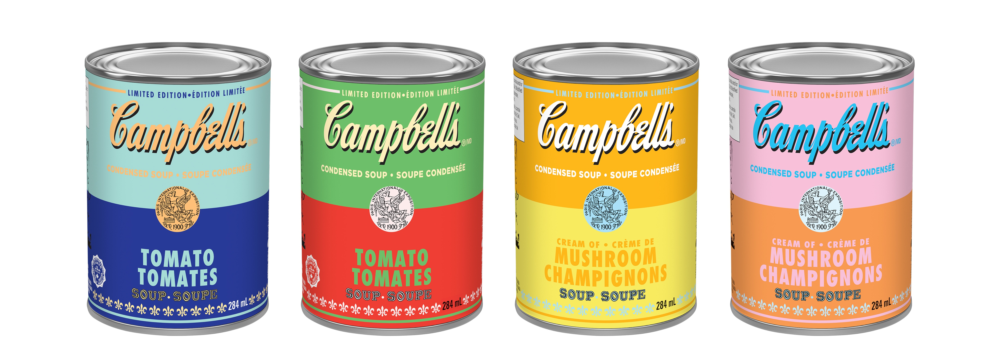
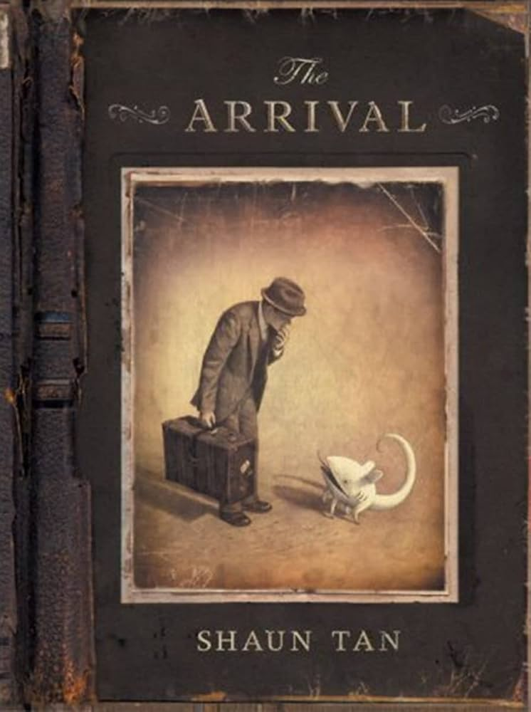
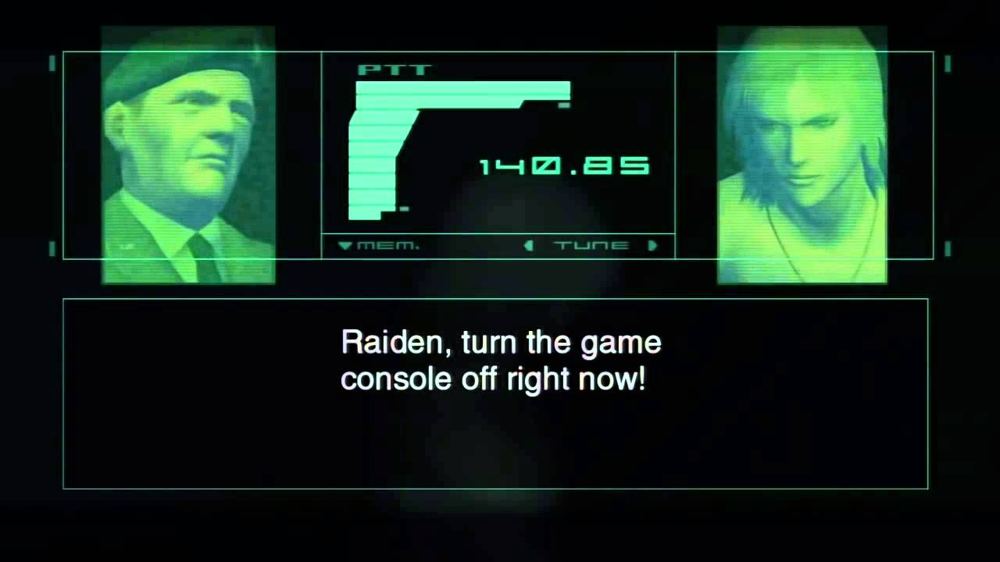

Welcome
Want to learn about postmodernism? You're in the right place. Scroll down to see some definitions and postmodernist art!

Postodernist Definitions
What is Postmodernism?
Postmodernism is a term used to refer to a variety of artistic, cultural, and philosophical movements that claim to mark a break from modernism.
(Wikipedia contributors. (2025, March 29). Postmodernism. Wikipedia.
Link)
Many postmodernists hold one or more of the following views: (1) there is no objective reality; (2) there is no scientific or historical truth (objective truth); (3) science and technology (and even reason and logic) are not vehicles of human progress but suspect instruments of established power; (4) reason and logic are not universally valid; (5) there is no such thing as human nature (human behavior and psychology are socially determined or constructed); (6) language does not refer to a reality outside itself; (7) there is no certain knowledge; and (8) no general theory of the natural or social world can be valid or true.
(The Editors of Encyclopaedia Britannica. (2025, February 11). What do postmodernists believe? | Britannica. Encyclopedia Britannica.
Link
)
Definitions
- Hyperreality: An image or simulation, or an aggregate of images and simulations, that either distorts the reality it purports to depict or does not in fact depict anything with a real existence at all, but which nonetheless comes to constitute reality (Dictionary.com | Meanings & Definitions of English Words. (2024). In Dictionary.com. Link )
- Binary Opposition: A pair of related terms or concepts that are opposite in meaning. (Wikipedia contributors. (2025, January 15). Binary opposition. Wikipedia. Link )
- Fragmentation: The disintegration or breaking apart of a cohesive narrative, structure, or form in literature, often reflecting the complexities of modern life. (Fragmentation - (Intro to comparative literature) - Vocab, definition, explanations | Fiveable. (n.d.). Fiveable. Link )
Postmodernist Literature

Postmodernist Art
grruhhhhf
Postmodernism in Video Games
Metal Gear Solid 2 is dubbed as the first postmodernist video game in the world. The game follows young male soldier named Jack (codename Raiden) who is the protaganist throughout most of the game. The game seems to progress as any other action-stealth game would - sneaking up on enemies, and trying not to make a sound to infiltrate the "Big Shell." ( A large marine decontamination facility established approximately 30 kilometers offshore from Manhattan, New York.) However, the plot soon reveals that the Big Shell is nothing more than a façade for Arsenal Gear, a massive, AI-controlled warship engineered to manipulate and regulate digital information on a global scale.
Another interesting point is the colonel that guides you throughout the game. While he may seem normal and real at first, it is quickly shown that he too, is an AI guiding Raiden to carry out his tasks. This is a key postmodernist element of the game, as it deconstructs the player's expectations of authority and trust in characters.
The whole game blurs the line between what is real and what is fake, what is machine and what is not.

💧︎□︎❍︎♏︎⧫︎♒︎♓︎■︎♑︎ ⬧︎♏︎♏︎❍︎⬧︎ ■︎□︎■︎📫︎●︎♓︎■︎♏︎♋︎❒︎
🕈︎♏︎ ⬥︎♓︎●︎●︎ ♎︎♏︎♍︎□︎■︎⬧︎⧫︎❒︎◆︎♍︎⧫︎ ⧫︎♒︎♏︎ ♑︎❒︎♋︎■︎♎︎ ■︎♋︎❒︎❒︎♋︎⧫︎♓︎❖︎♏︎
public class HelloWorld
public static void main(String[] args) {
System.out.println("Hello World!");
} Are you part of a Grand Narrative?
Postmodernists might say yes?
Is This a Website or a Dreamscape?
Question the very medium: are you on a meticulously crafted website, or merely drifting through an endless dream where nothing is as it seems? Reality dissolves when the boundary between digital and surreal blurs.
The Descent.
Be aware that you are scrolling
Nothing is real.
const content = document.querySelector('.content');
const sections = document.querySelectorAll("section");
const textElements = document.querySelectorAll("h2, p");
window.addEventListener("scroll", () => {
const scrollY = window.scrollY;
content.style.opacity = Math.max(1 - scrollY / 5000, 0);
const hue = scrollY > 3000 ? ((scrollY - 3000) / 10) % 360 : 0;
const rotate = scrollY > 3500 ? Math.sin((scrollY - 3500) / 500) * 1.5 : 0;
const scale = scrollY > 3500 ? 1 + Math.sin((scrollY - 3500) / 600) * 0.03 : 1;
textElements.forEach(element => {
element.style.transform = `rotate(${rotate}deg) scale(${scale})`;
element.style.filter = `hue-rotate(${hue}deg)`;
});
});